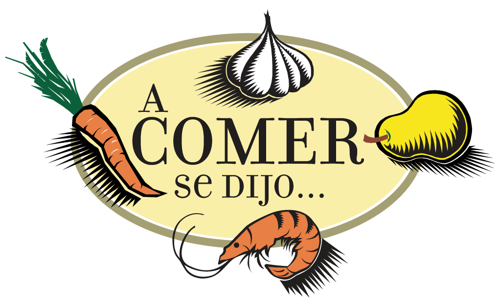

Lo que dicen nuestros clientes
Restaurantes reales en Colombia que sistematizaron su operación y eliminaron el estrés en las horas pico.
 Fattory Burger
Fattory Burger

A Comer Se Dijo Urban Grill
Urban Grill

Jhoann Pérez
Propietario de Fattory Burger
"El mayor alivio fue dejar de responder la misma pregunta de '¿a cómo las papas?' cincuenta veces en una sola noche."
Dudaba de los menús digitales, pero nos sorprendió. WhatsApp ya no colapsa en horas pico y los pedidos llegan organizados directamente a la cocina sin errores.

Carlos Afanador
Propietario de A Comer Se Dijo
"La verdad es que nos quitó un peso de encima con el enredo de las cuentas y comandas los domingos."
Evitamos por completo las sumas erróneas y las bebidas olvidadas. El menú calcula el total al instante y apagar platos agotados desde el celular es facilísimo.

Jorge Palencia
Fundador de Urban Grill
"Queríamos que el menú se viera tan bien como la comida que servimos, sin pagar comisiones absurdas."
Las fotos se ven impecables y carga al instante. Recibimos pedidos directos al WhatsApp sin pagar comisiones abusivas y con un soporte excelente de Symax.